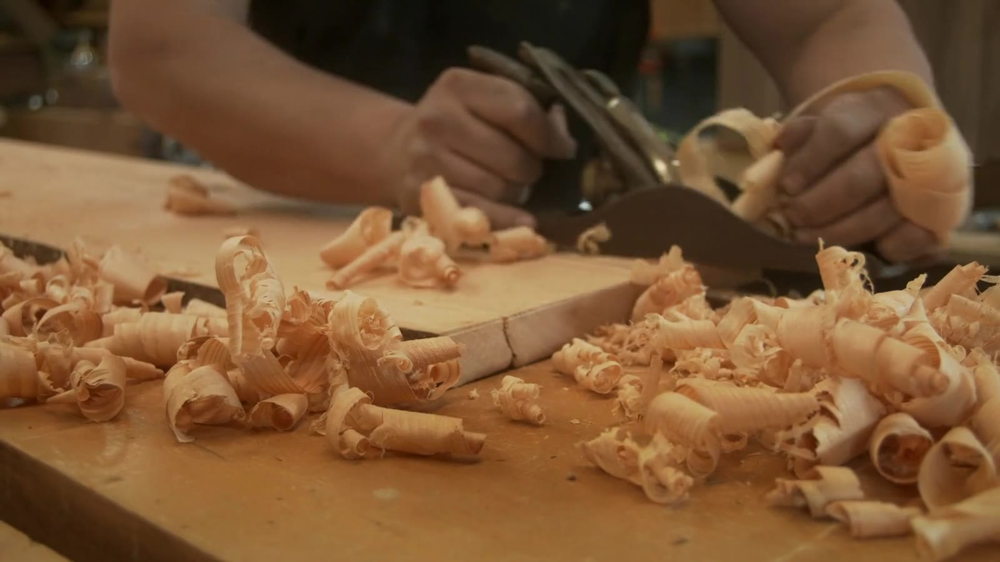

Furniture from the wood you want to keep.
Let homelive on.
The floorboards you grew up on. A beam from a familiar room. We make them into furniture for the life still ahead.
Explore the piecesA little of where you came from.
Reclaimed timber.
Made by hand.
A second life, thoughtfully made.
The floor you grew up on.
The table you’ll gather round.
Some wood is too full of memories to leave behind. We work with the boards, beams and inherited pieces you already have, finding a new use for what matters.
We start with its story, its sound grain and the way you want to live. Then we make something that feels at home with you.
How a piece takes shapeOld timber. Everyday company.
Room for another chapter.


A quiet corner, reimagined.
The window shelves.
Old boards, making space for the books and small things that come next.
Read its storyIllustrative commissions, showing the kinds of stories and pieces we’d love to work on.

Inside the workshop
An eye for the grain.
An ear for the story.
Before the drawing, there’s a conversation. Where did the timber come from? Which marks would you hate to lose? What should it feel like to use, every day?
Meet the way we workCharacter, kept.
Worn edges and old fixing marks can have a place in the finished piece.
Care, built in.
Thoughtful joinery and a finish made for everyday hands.
The human part
Illustrative client testimonials
The everyday moments
we make room for.
1 / 3
“We wanted to keep something from the old house. Now it’s the table we sit around every evening.”
Clara & BenIllustrative client words · a family table
What would you
like to keep?
A few photographs, a rough idea and the story behind your timber. That’s a good place to start.
Start a conversation